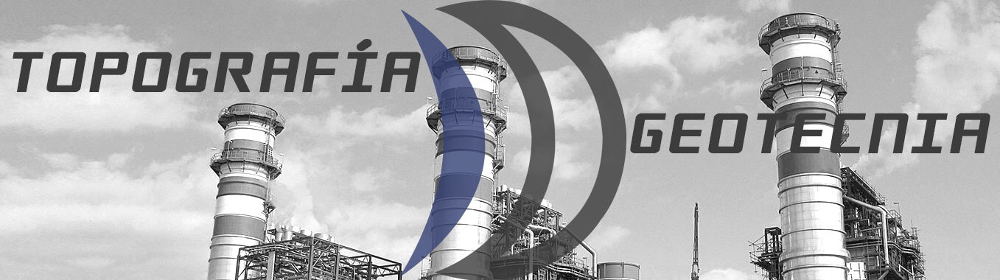
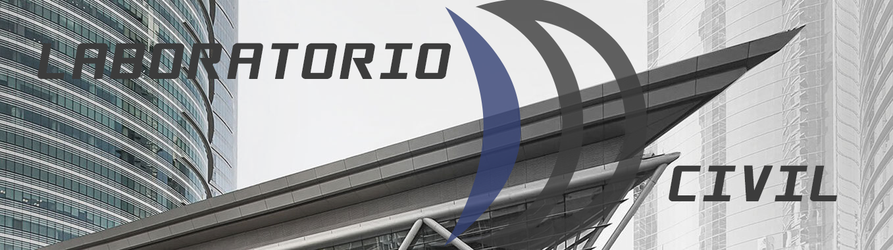
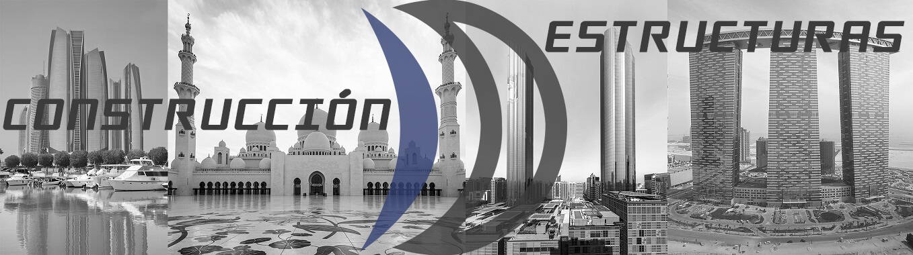
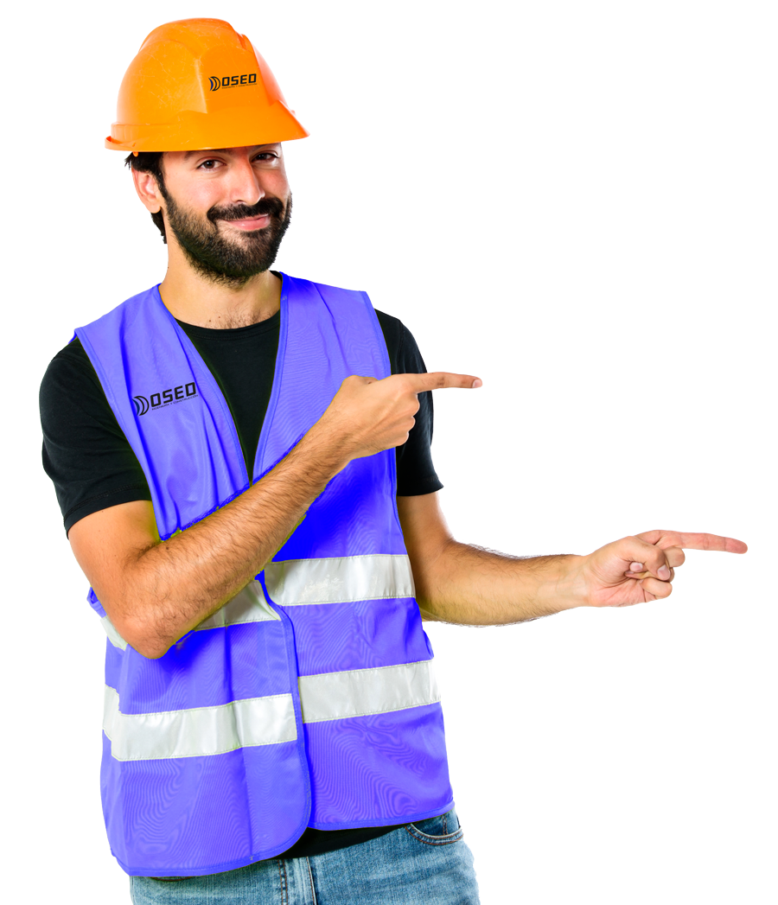
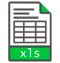
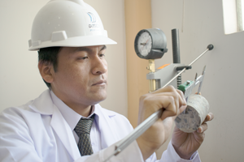
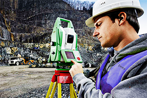
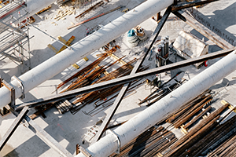
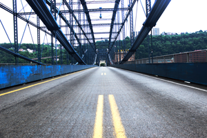

<!DOCTYPE html>
<html lang="en">
  <meta charset="UTF-8"/>
  <meta content="IE=edge" http-equiv="X-UA-Compatible"/>
  <meta content="width=device-width,initial-scale=1" name="viewport"/>
  <meta name="keywords" content="peru,huancayo"/>
  <meta name="description" content=""/>
  <meta name="author" content="DOSED SAC"/>
  <link href="../styles/materialize.css" rel="stylesheet"/>
  <link rel="stylesheet" type="text/css" href="../styles/slick.css"/>
  <link rel="stylesheet" type="text/css" href="../styles/slick-theme.css"/>
  <link rel="stylesheet" type="text/css" href="../styles/icons.css"/>
  <link rel="stylesheet" type="text/css" href="../styles/owner.css"/>
  <script src="../js/propios/jquery-2.1.1.min.js" type="text/javascript"></script>
  <script src="../js/bin/materialize.min.js"></script>
  <script src="../js/propios/general.js"></script>
  <link rel="shortcut icon" href="../images/favicon.ico"/>
</html>
<body>
  <header>
    <nav class="nav-extended white">
      <div class="nav-wrapper">
        <!--img(srcset="../images/logo.png 1024w, ../images/logo_small.png 480w" style="margin-left: 30px").brand-logo.left.responsive-img--><a class="button-collapse" href="#" data-activates="mobile-demo"><i class="material-icons large black-text">menu</i></a>
        <ul class="right hide-on-med-and-down" id="nav-mobile" style="margin-right: 30px;">
          <li><a class="waves-effect waves-green black-text" href="../html/home.html">Inicio</a></li>
          <li><a class="waves-effect waves-green black-text" href="../html/nosotros.html">Nosotros</a></li>
          <li><a class="waves-effect waves-green black-text" href="../html/servicios.html">Servicios</a></li>
          <!--li
          a.waves-effect.waves-green.black-text("javascript: void(0)")
              | Proyectos
          -->
          <!--li
          a.waves-effect.waves-green.black-text(href="../html/cotizador.html")
              | Cotizador
          -->
          <li><a class="waves-effect waves-green black-text" href="../html/ubicanos.html">Ubícanos</a></li>
          <li><a class="waves-effect waves-green black-text" href="../html/contacto.html">Contacto</a></li>
          <!--li
          a.waves-effect.waves-green.black-text(href="../html/maquinas.html")
              | Maquinaria DOSED
          -->
        </ul>
        <ul class="side-nav" id="mobile-demo">
          <li><a class="waves-effect waves-green black-text" href="../html/home.html">Inicio</a></li>
          <li><a class="waves-effect waves-green black-text" href="../html/nosotros.html">Nosotros</a></li>
          <li><a class="waves-effect waves-green black-text" href="../html/servicios.html">Servicios</a></li>
          <!--li
          a.waves-effect.waves-green.black-text("javascript: void(0)")
              | Proyectos
          -->
          <!--li
          a.waves-effect.waves-green.black-text("javascript: void(0)")
              | Cotizador
          -->
          <li><a class="waves-effect waves-green black-text" href="../html/ubicanos.html">Ubícanos</a></li>
          <li><a class="waves-effect waves-green black-text" href="../html/contacto.html">Contacto</a></li>
          <!--li
          a.waves-effect.waves-green.black-text(href="../html/maquinas.html")
              | Maquinaria DOSED
          -->
        </ul>
      </div>
      <div class="nav-content">
        <ul class="tabs tabs-transparent"></ul>
      </div>
    </nav>
    <!--.fixed-action-btn
    a("javascript: void(0)").btn-floating.btn-large.indigo.darken-1
        i.large.material-icons live_help
    -->
  </header>
  <style>
    .cr {
        min-width: 100%;
    }
    
  </style>
  <div class="regular slider">
    <div></div>
    <div></div>
    <div></div>
  </div>
  <div class="container">
    <div class="row">
      <div class="col offset-m2 m8 offset-s1 s10">
        <h4 class="center">Bienvenido a DOSED SAC</h4>
        <p> DOSED, es una empresa de ingeniería multidisciplinaria  que cuenta con  personal altamente capacitado en estudios  de suelos, consultoría, geotecnia, topografía, ejecución de obras y  mucho más. Estamos  orientados  al sector público y privado. No esperes más y contacta con nuestro equipo de expertos.</p>
      </div>
    </div>
    <div class="row">
      <div class="col s12 m6"></div>
      <div class="col s12 m6">
        <h5 class="red-text center text-roboto">¿En qué podemos ayudarte?</h5>
        <div class="row">
          <div class="col offset-m1 m10">
            <ul>
              <li>
                <div class="boton-home" id="btnBloque1Servicios"><span>Servicios</span></div><br/>
              </li>
              <!--li
              .boton-home#btnBloque1Cotizador
                  span Cotizador 
              br
              -->
              <li>
                <div class="boton-home" id="btnBloque1Ubicacion"><span>Encuentra nuestros locales </span></div><br/>
              </li>
              <li>
                <div class="boton-home" id="btnBloque1Contacto"><span>Comunicate con nosotros</span></div><br/>
              </li>
              <!--li
              .boton-home#btnBloque1Contacto
                  span Maquinaría DOSED
              br
              -->
              <li class="center"><strong class="text-roboto center">¡Descarga nuestro brochure!</strong><br/></li>
              <li class="center"><strong class="text-roboto center">¡Cotiza precios ahora!</strong><br/></li>
            </ul>
          </div>
        </div>
      </div>
    </div>
  </div>
  <div class="blue-grey lighten-5">
    <div class="container">
      <div class="section">
        <div class="row center">
          <h3 class="header primary-text">Nuestros servicios</h3>
        </div>
      </div>
      <div class="row">
        <div class="col m4 s12 center">
          <div class="card-panel content-home z-depth-3">
            <h5 class="center">Consultoría</h5>
            <p class="light">Realizamos supervisión general de proyectos correspondiente al seguimiento y control de las actividades de acuerdo a los requerimientos del ente consultor o cliente, basándonos en la calidad de nuestro personal especializado, tecnología en equipos y laboratorio. Así mismo, realizamos asesoría geotécnica establecida en las normas técnicas que contribuyan en la solución de problemas de modo práctico, simple y óptimo.</p>
          </div>
        </div>
        <div class="col m4 s12 center">
          <div class="card-panel content-home z-depth-3">
            <h5 class="center">Laboratorio</h5>
            <p class="light">DOSED, ofrece a usted una gran variedad de ensayos de laboratorios, estos son realizados a través de una serie de parámetros analíticos con el fin de aportar las pruebas necesarias para la conformidad del estudio realizado. Contacte hoy a nuestro equipo de expertos para obtener más información.</p>
          </div>
        </div>
        <div class="col m4 s12 center">
          <div class="card-panel content-home z-depth-3">
            <h5 class="center">Topografía</h5>
            <p class="light">El  levantamiento  topográfico es la primera fase del estudio técnico  y  descriptivo  de un terreno. Se trata de examinar la superficie teniendo en cuenta las características físicas, geográficas y geológicas del terreno, pero también las alteraciones existentes en el terreno y que se deban  a  la  intervención del hombre.</p>
          </div>
        </div>
      </div>
      <div class="row">
        <div class="col m4 s12 center">
          <div class="card-panel content-home z-depth-3">
            <h5 class="center">Geotecnia</h5>
            <p class="light"> DOSED, ofrece  servicios  de ingeniería geotécnica de expertos,  incluyendo  recomendaciones de cimentación y  diseño,  sitio  de la clasificación   sísmica   específica, análisis  de   estabilidad   de taludes,  muros  de  contención, sistemas de apoyo a la excavación.</p>
          </div>
        </div>
        <div class="col m4 s12 center">
          <div class="card-panel content-home z-depth-3">
            <h5 class="center">Civil</h5>
            <p class="light">DOSED, ofrece el servicio de realización de expedientes técnicos, elaboración de perfil, construcción de obras. Con el objetivo de contribuir en el desarrollo de los lugares donde dejamos huella con nuestro trabajo.</p>
          </div>
        </div>
        <div class="col m4 s12 center">
          <div class="card-panel content-home z-depth-3">
            <h5 class="center">Estructuras</h5>
            <p class="light">DOSED cuenta con  experiencia en muchos aspectos  de  la  ingeniería  estructural,   incluyendo   el análisis, diseño y modernización de las  estructuras nuevas      y     existentes.</p>
          </div>
        </div>
      </div>
    </div>
  </div>
  <script src="../js/propios/slick.min.js" type="text/javascript"></script>
  <script src="../js/propios/home.js" type="text/javascript"></script>
  <script src="../js/generalidades.js"></script>
  <div class="center">
    <div class="card white"><br/>
      <label class="center">info@dosedperu.com</label>
    </div>
  </div>
  <div class="grey darken-2">
    <div class="center">
      <label>DOSED SAC Ingeniería y construción - 2017. Todos los derechos reservados.</label>
    </div>
  </div>
  <script>
    $(function() {
        $("#iconFB").on("mouseover", function () {
            $(this).css("cursor", "pointer")
            .on("click", function() {
                window.location.href = "https://web.facebook.com/Dosed-Sac-520541444743360/?ref=br_rs";
            });
        });
    });
  </script>
</body>